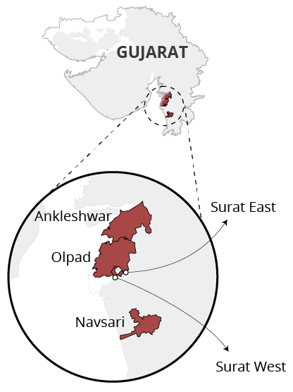

This is a headline
By Gurman Bhatia and Samarth Bansal
As the Surat neighbourhood goes, so goes Gujarat. A Hindustan Times analysis of electoral data shows that from 1962 to 2012, fives constituencies around Surat voted for the party that won the election.
Politics of Surat mirror that of Gujarat
Five seats near Surat have elected a candidate from the ruling Government since 1962
Source: Jensenius, F.,Verniers, G. Indian State Assembly Election and Candidates Data(1962-Present); HT Analysis; Election Commission of India
The “bellwether” constituencies – Ankleshwar, Olpad, Surat East, Surat West, Navsari – elected Congress MLAs when the party dominated the state in the first two decades since 1962, and the BJP since last two decades.
Experts interviewed by the Hindustan Times could not offer any credible theories to explain why this pocket of constituencies seems to set the tone for the rest of the state.
For all Gujarat assembly elections since 1980, the number of such 'bellwether' constituencies increases to 24 – 13% of the total 182 constituencies.
In 2008, the delimitation process led to a change in the constituency boundaries and names. In order to compare trends before and after 2008, we looked for seats with the same name. If they didn't exist prior to delimitation, we looked for new seats that had a similar boundary. When both criteria failed, we omitted the seat.
Strongholds and the rural-urban divide
Looking at the electoral history of individual seats, more interesting trends emerge. Take the rural-urban divide in 2012. Data shows that the BJP completely dominated the urban constituencies, whereas in rural areas, the state witnessed more of a contest.
In 50 of the 56 seats (90% of all seats) in which more than half the population lives in urban areas, the BJP had a higher vote share than the Congress.
However, in the 126 predominantly rural constituencies, the fight was tight: the Congress had a higher vote share than the BJP in 44% of the seats (55), while the BJP led in 56% of the seats (71).
For this analysis, we used assembly-level demographic data. How India Lives, a search engine for public data, mapped all 2011 census tehsils to constituencies in which they fall. In case of urban areas that were part of multiple seats, the constituencies were matched by village or ward data. Of the 19,000+ census areas, some 100 were left unmatched because of uncertainty.
The BJP has won 35 seats – one-fifth of all constituencies – in every election since it first came to power in 1995. Twenty of these seats, including Prime Minister Narendra Modi’s pocket borough of Maninagar, are predominantly urban. Fifteen are rural.
As for the Congress, such strongholds are few. Since 1995, the Congress has been able to win all consequent elections in just four seats, all of which are predominantly rural.
Anti-incumbency
Seven seats in Gujarat have constantly flipped since BJP came to power in 1995
Source: Jensenius, F.,Verniers, G. Indian State Assembly Election and Candidates Data(1962-Present); HT Analysis; Election Commission of India
Anti-incumbency sentiment doesn’t seem to be a dominating factor in Gujarat politics. After all, the same party has been in power since 1995.
Dr. Jayesh Shah, research consultant at the Center for Culture and Development in Vadodara, attributes the anti-incumbency trends to local issues.
“It's a question of how they [parties] strategise and solve the problems,” he said.
For instance, in Dabhoi, a seat 30 kms from Vadodara, the BJP won in 2012. Prior to the elections, Shah explained, the BJP settled a land issue involving a cemetery and mosque, which the sitting Congress MLA had ignored, thereby winning a massive Muslim vote.
“It is about who solves the grassroots problems,” Shah said.
Note: Constituency boundaries were redrawn in 2008, because of which 2012 elections were conducted under different boundaries.